Analiza rješenja · JOI Spring Camp 2023 · Dan 4
Bitarovo putovanje
O ovom članku
Tekst je prijevod službene japanske prezentacije rješenja, preoblikovan u članak. Slajdovi su ugrađeni kao slike; natpis pod svakim slajdom je prijevod teksta na njemu. Dijelovi označeni kao trenerska napomena nisu u izvornoj prezentaciji — dodani su da popune korake koje slajdovi preskaču ili samo skiciraju.
Slajdovi
Zadatak
izvorni slajdovi 1–7
-
1Naslov; analiza: ynymxiaolongbao. -
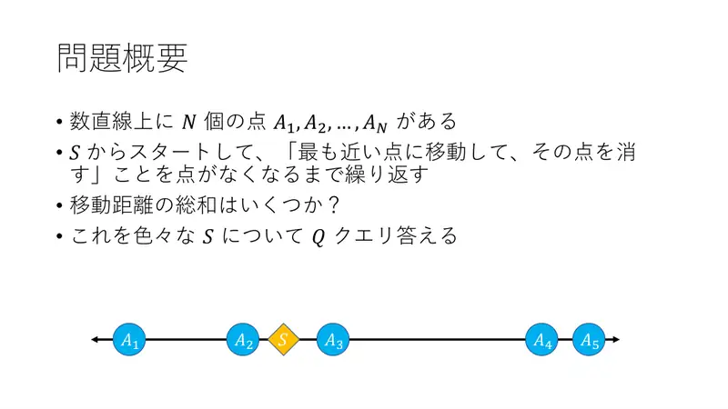
2$N$ točaka na pravcu; iz $S$ ponavljaj „idi na najbližu, izbriši je”; ukupna udaljenost; $Q$ upita po $S$. -
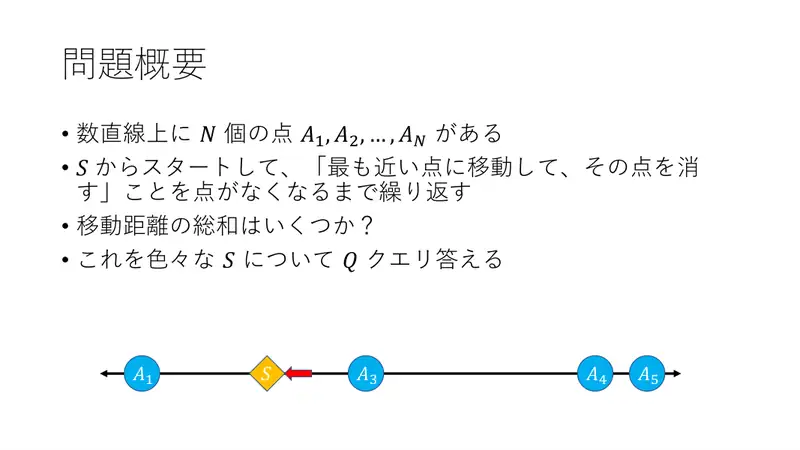
3Primjer: prvi korak. -
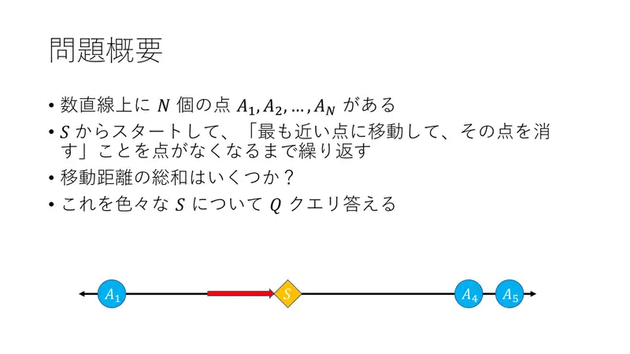
4Drugi korak. -
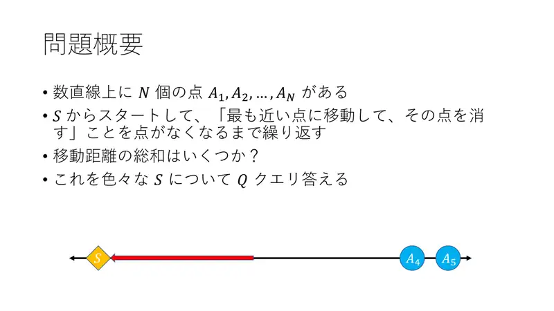
5Treći korak. -
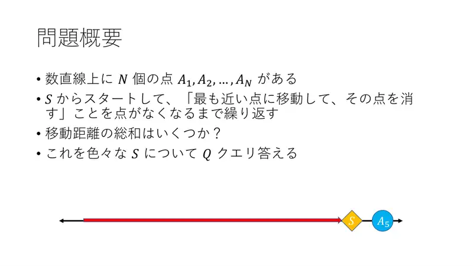
6Četvrti korak. -
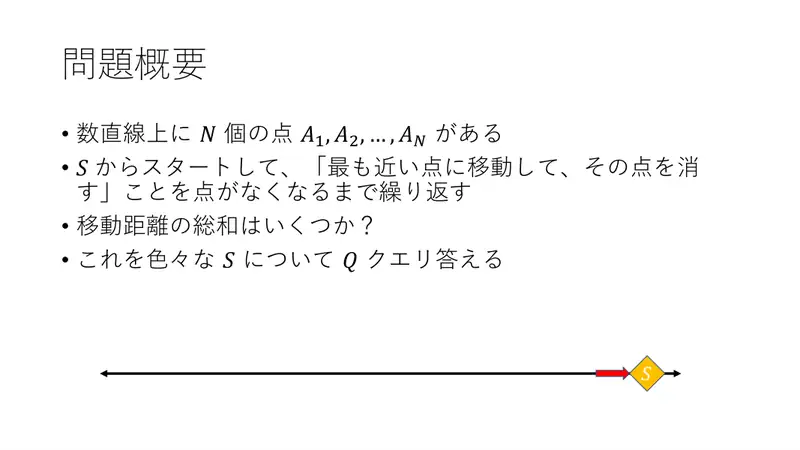
7Gotovo.
← → tipke ili klik na sliku
Podzadaci 1–2 15 bodova
Koraci algoritma
Simulacija s dva kraja
izvorni slajdovi 8–13
-
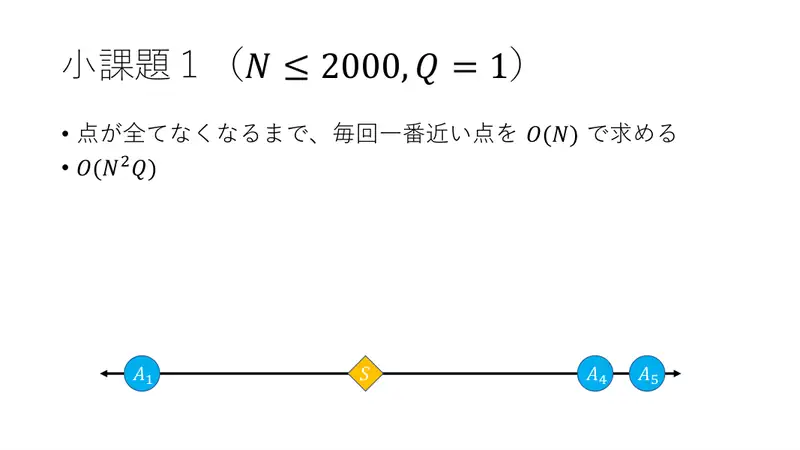
8Podzadatak 1: svaki korak nađi najbližu u $O(N)$: $O(N^2Q)$. -
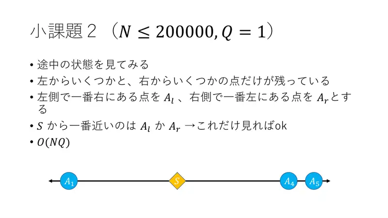
9Podzadatak 2: pogledaj međustanje — preostaju samo prefiks i sufiks točaka. Neka je $A_l$ najdesnija preostala lijevo, $A_r$ najljevija desno. -
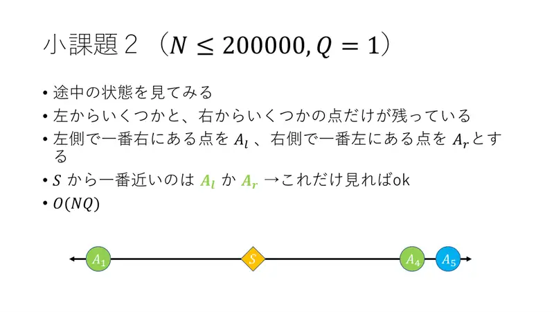
10Najbliža je $A_l$ ili $A_r$: dovoljno gledati njih dvije — $O(NQ)$. -
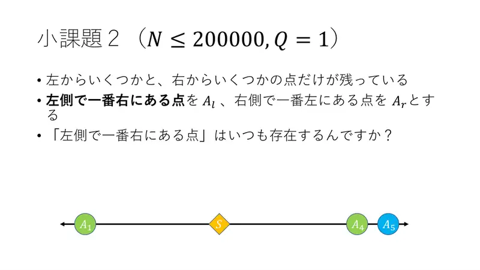
11Postoji li $A_l$ uvijek? -
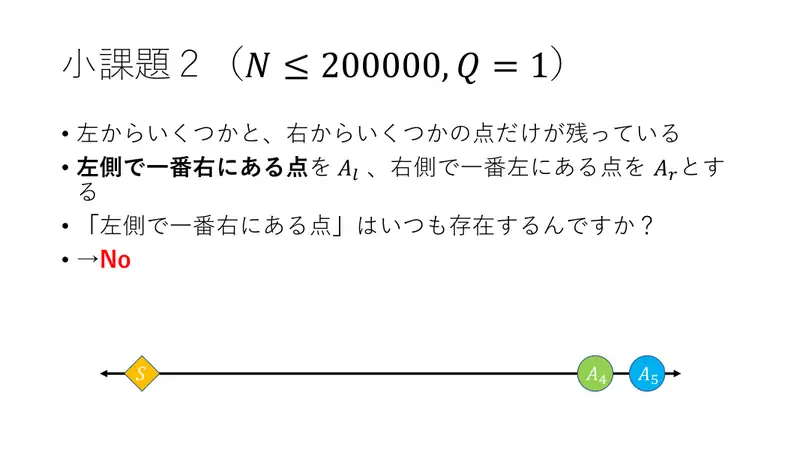
12Ne (lijeva strana može biti prazna). -
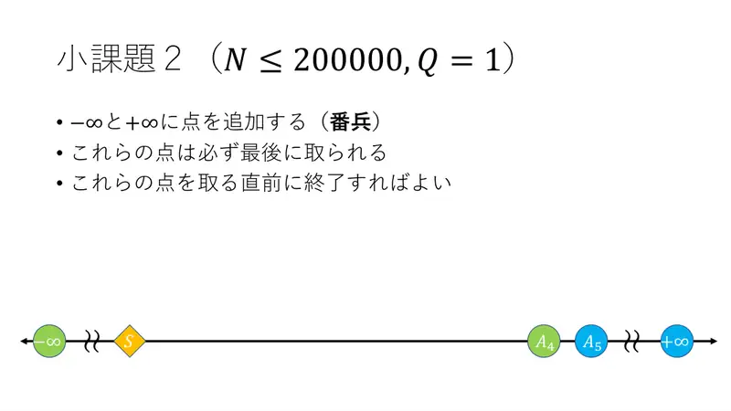
13Stražari u $-\infty$ i $+\infty$: uvijek se uzimaju zadnji; stani prije njih.
← → tipke ili klik na sliku
Podzadatak 3 30 bodova
Koraci algoritma
Razmak raste
izvorni slajdovi 14–20
-
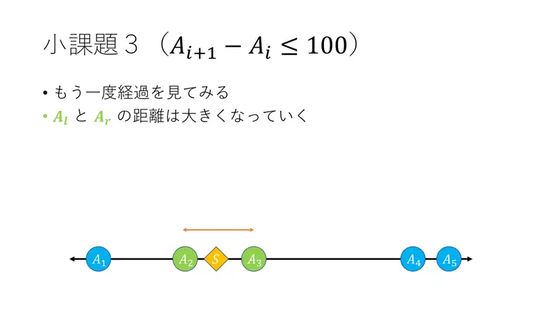
14Pogledaj tijek: udaljenost između $A_l$ i $A_r$ raste. -
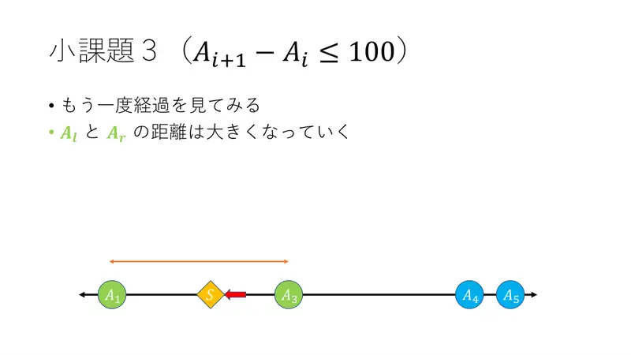
15(Korak.) -
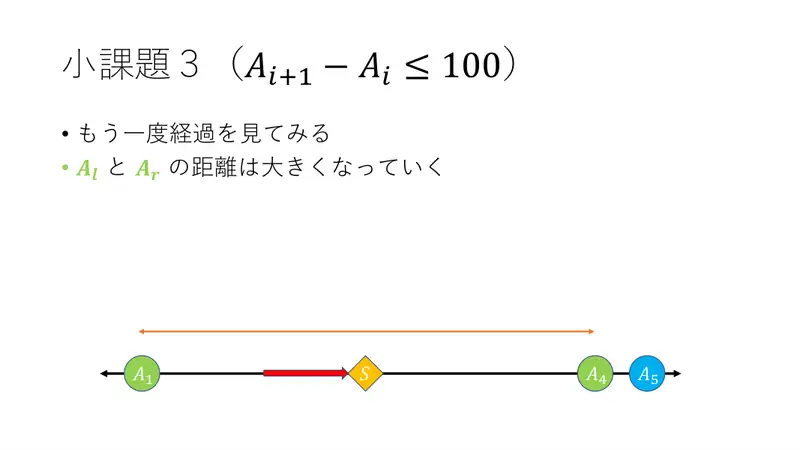
16(Korak.) -
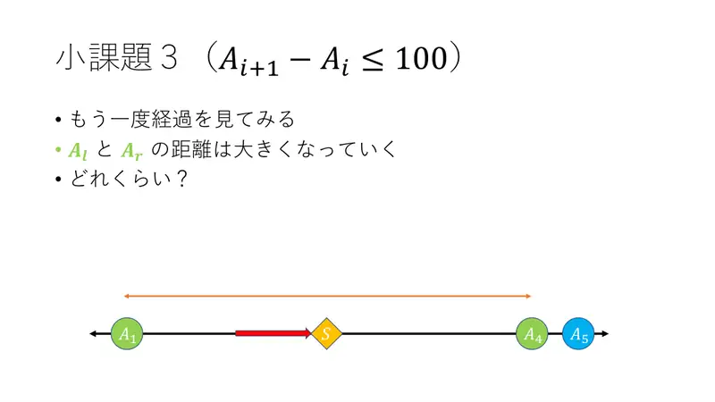
17Koliko brzo? -
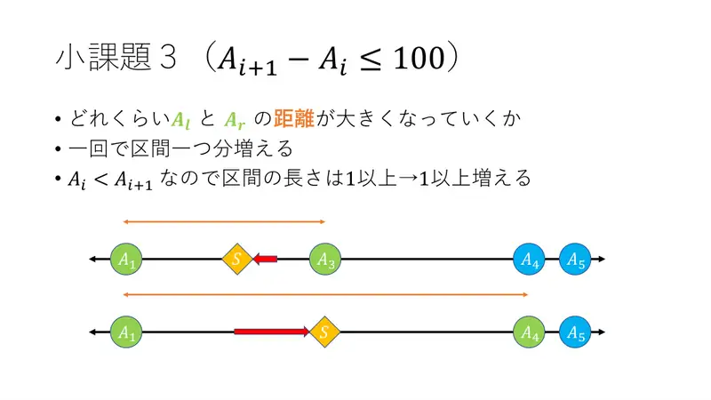
18Svakim korakom raste za jedan razmak, a razmaci su $\ge 1$ (cjelobrojne različite koordinate). -
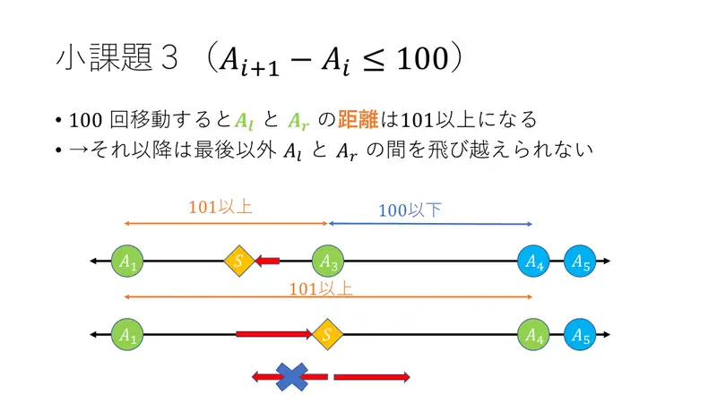
19Nakon 100 koraka udaljenost $A_l$–$A_r$ je $\ge 101$: nakon toga Bitaro ne može preskočiti (razmaci $\le 100$) osim na samom kraju. -
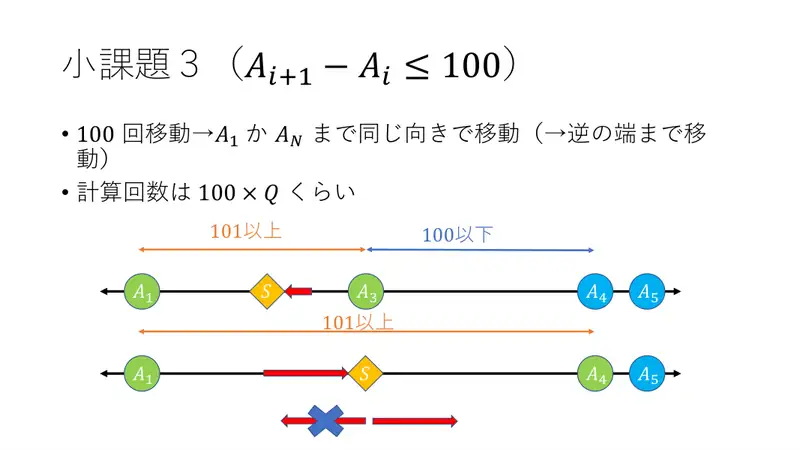
20Dakle 100 koraka simulacije, zatim ravno do kraja u jednom smjeru pa do drugog kraja; oko $100\cdot Q$ operacija.
← → tipke ili klik na sliku
Puni bodovi 55 bodova
Koraci algoritma
Udvostručavanje i binarno pretraživanje
izvorni slajdovi 21–24
-
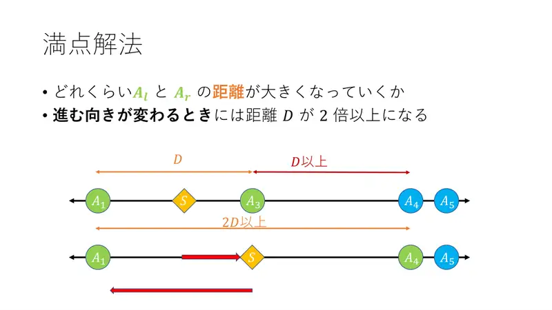
21Kad Bitaro promijeni smjer, udaljenost $D$ između $A_l$ i $A_r$ barem se udvostruči. -
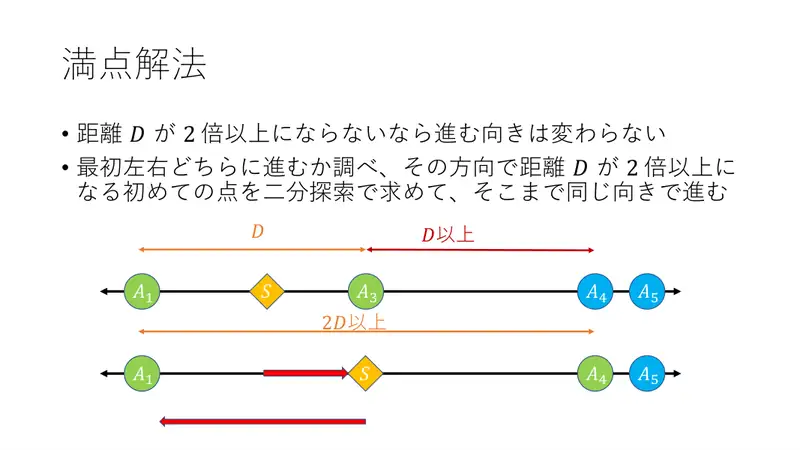
22Dok se $D$ ne udvostruči, smjer se ne mijenja: odredi početni smjer, binarno nađi prvu točku gdje $D$ postaje $\ge 2D$, idi ravno do nje. -
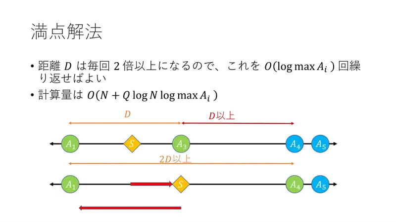
23$D$ se svaki put udvostruči → $O(\log\max A)$ ponavljanja; ukupno $O(N + Q\log N\log\max A)$. -
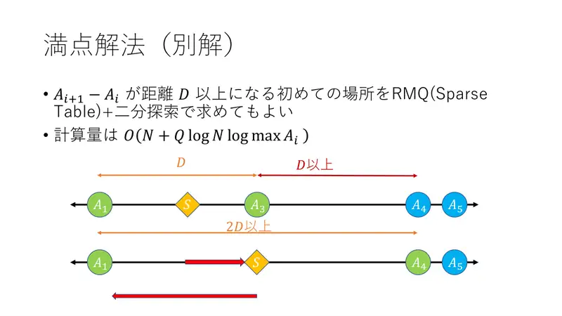
24Alternativa: prvo mjesto gdje je razmak $A_{i+1}-A_i \ge D$ nađi RMQ-om (sparse table) + binarnim pretraživanjem; ista složenost.
← → tipke ili klik na sliku
Slajdovi
Statistika
izvorni slajdovi 25–26
-
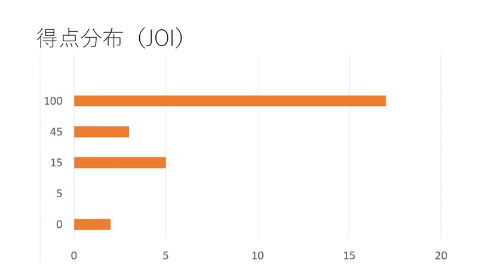
25Raspodjela bodova (JOI). -
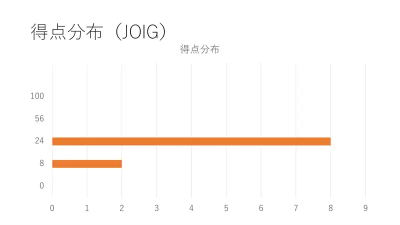
26Raspodjela bodova (JOIG).
← → tipke ili klik na sliku
Sažetak
- Posjećeno je uvijek interval; kandidati su dva kraja.
- Svaka promjena smjera udvostručuje širinu → $O(\log\max X)$ promjena; blok istog smjera binarnim pretraživanjem.
- $O(N + Q\log N\log\max X)$.